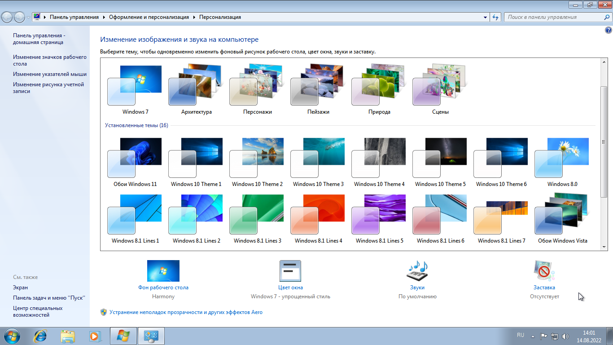
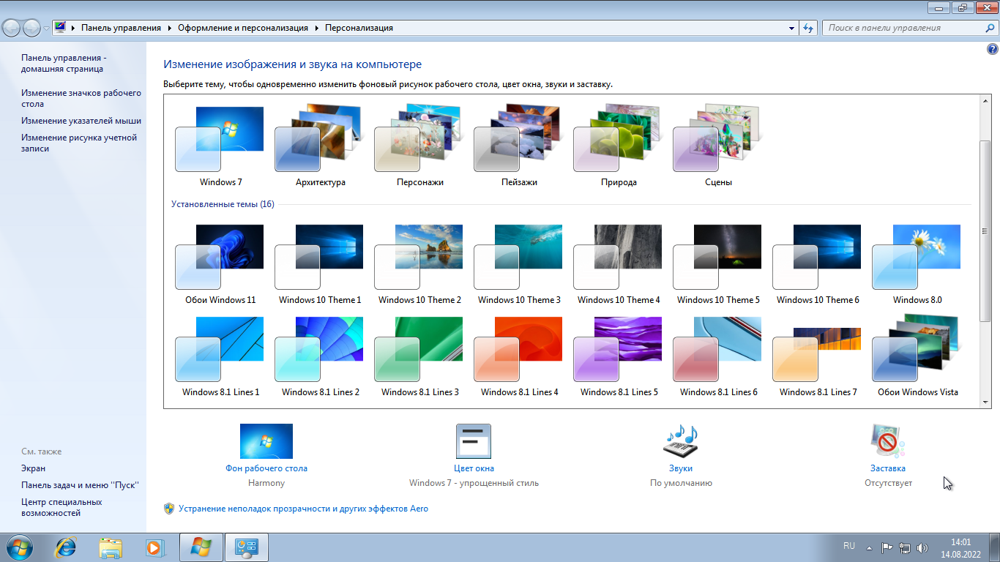
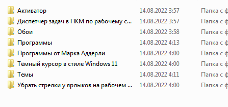
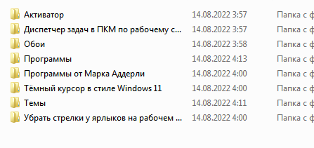

Сборки Windows Lite
Windows 11 Pro V3 Lite 21H2 by Adderly (13.09.2022)
Добавлена папка "от Марка Аддерли", в которой находятся инсталяторы полезных и авторских программ,
а так же рег файлы, чтобы вернуть старый просмотрщик фото и чтобы отключать и включать обновления.
Удален Windows Recovery
Удалены все языки кроме Украинского, Японского, Китайского, Корейского
Удалена поддержка принтеров и факсов
Удалена голосовая поддержка
Удалены компоненты MDAC, MSMQ
Удален WinSxS Backup
Удалены компоненты Tablet PC
Удалены компоненты MobilePC
Удален Windows Tiff Filter
Удален Easy Transfer
Удален Temp
Удален DVD Play
Удалены приложения "Почта, Люди, One Note, Get Started, Камера"
Интегрированы Microsoft Visual Studio Redistributable 2005, 2008, 2010, 2012, 2013, 2015 - 2022, x86 и x64
Интегрированы Framework 4.8, 4.7.2, 3.5, 3.0, 2.0
Включён DirectPlay
Добавлен диспетчер задач в ПКМ по рабочему столу (по желанию можно выключить)
Образ весит 5.1 GB, после установки Windows занимает 21 GB
Образ основан на официальном MSDN Windows 11 21H2 (22000.194)
(Основана на старой, чтобы вы обновились сами. Сделано это для того, чтобы работали параметры реестра для того, чтобы обойти проверку.)
Проверка отключена в этой сборке, и смотреть как обходить проверку на моей сборке вам не потребуется!)
У этой версии сборки проблема с OOBE (Первоначальная настройка)
Windows 8.1 Pro V5 Lite by Adderly (13.09.2022)
Сборка обновлена до Update 3
Добавлена папка KMS
Добавлена папка "от Марка Аддерли" в которой находятся инсталяторы самых нужных и авторских программ
Удален Windows Defender
Удален Windows Recovery
Удалены все языки кроме Украинского
Удалена поддержка принтеров и факсов
Удалена голосовая поддержка
Удалены компоненты MDAC
Удален WinSxS Backup
Удалены компоненты Tablet PC
Удалены компоненты MobilePC
Удален Windows Tiff Filter
Удален Easy Transfer
Удален Temp
Удален DVD Play
Интегрирован Framework 4.8, 4.7.2, 3.0, 2.0
Интегрированы Microsoft Visual C++ Redistributable 2005, 2008, 2010, 2012, 2013, 2015 - 2022. x86 и, x64
Включен DirectPLay
Добавлены темы "Архитектура, Персонажи, Лашдафты" из Windows 7
Добавлены темы с обоями рабочего стола из Windows Vista, 7, 8.0, 10, 11
Добавлены темы с обоями из экрана блокировки Windows 8 и Windows 10
Добавлен диспетчер задач в ПКМ по рабочему столу (по желанию можно отключить)
Отключен файл подкачки
Ключ - GCRJD-8NW9H-F2CDX-CCM8D-9D6T9
Образ весит 3.58 GB, после установки Windows занимает 10 GB.
Образ основан на официальном MSDN Windows 8.1.
Windows 7 Ultimate V4 Lite by Adderly (13.09.2022)
 

 


Обновления на 2011 год. (Service Pack 1)
Добавлен активатор.
Добавлена папка "от Марка Аддерли" в которой находятся инсталяторы самых нужных и авторских программ
Удалена поддержка принтеров и факсов
Удалены все языки кроме Украинского
Удалены образцы музыки, видео, фото
Удалена голосовая поддержка
Удалены компоненты Tablet PC
Удалены компоненты MobilePC
Удален Windows Tiff Filter
Удалены компоненты MDAC
Удален WinSxS Backup
Удален Windows Defender
Удален Windows Recovery
Удален Temp
Удален Easy Transfer
Удалены DVD, Maker, Play
Удалены Игры
Интегрированы Framework 4.8, 4.7.2, 3.5
Интегрированы Microsoft Visual Studio Redistributable 2005, 2008, 2010, 2012, 2013, 2015 - 2022, x86 и x64
Добавлены темы Windows 8.1, и 10 (по желанию можно удалить)
Добавлены темы с обоями Windows Vista, 11
Отключены гаджеты (по желанию можно вернуть)
Отключен файл подкачки
Добавлен диспетчер задач в ПКМ по рабочему столу
Образ весит 3.08 GB, после установки Windows занимает 8.64 GB.
Образ основан на официальном MSDN Windows 7.
Смотрите так же:
Сборки Windows 10 Сборки Windows 8.0 Сборки Windows 7 Windows Lite x32